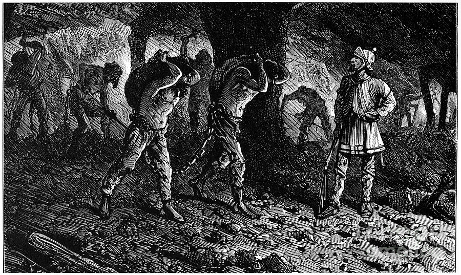
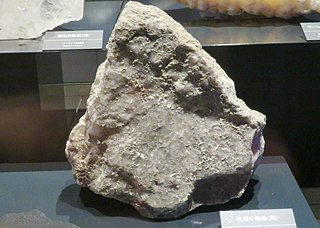
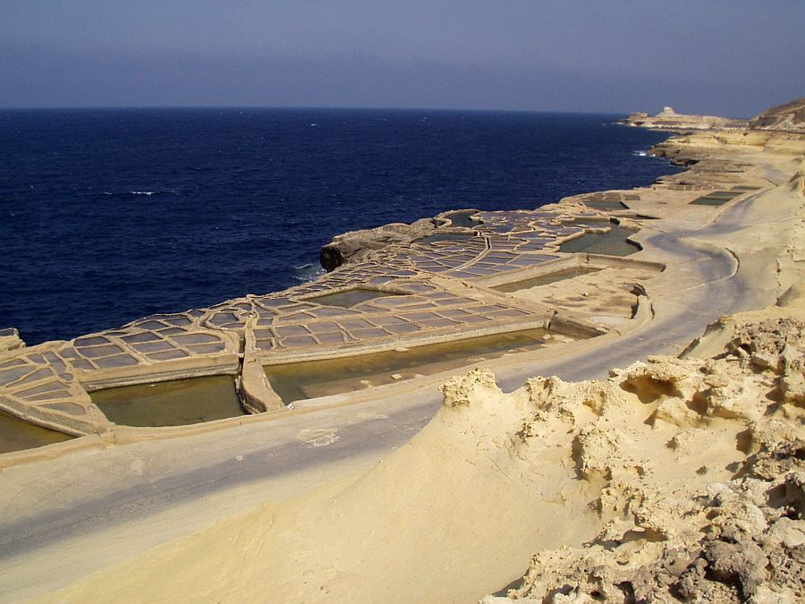

V starorímskej ríši mohol byť považovaný za centrum obchodovania so soľou samotný Rím, i keď soľ sa získavala inde. Ľudia vyrábali soľné rybníky na okrajoch Apeninského polostrova na brehoh mora, odkiaľ získavali soľ, ale taktiež ju ťažili v Alpách. Na rôzne iné použitia soli, ako napríklad v gastronómii, neboli Rimania prílíš vynaliezaví, ale inšpirovali sa a získavali užitočné techniky od národov, ktoré dobyli.
História ťažby tohto ložiska soli siaha do prvého storočia pred naším letopočtom, kedy bola vyťažená soľ komerčne dostupná Rimanmi. Po druhej svetovej vojne bolo toto ložisko soli priemyselne využívané a stalo sa jednou z najdôležitejších baní halitov v Taliansku. Prevádzka definitívne skončila v roku 1989.
  